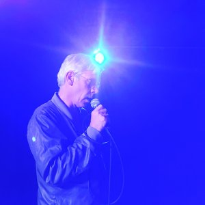

Karl’s Perfect Day

Rirkrit TiravanijaDE/MX 2017 – 16mm auf HD 93 min – English
German Premiere
B: Karl Holmqvist – DOP: Cristian
Manzutto, Uwe Teske, Michael Kotshi – E: Cristian Manzutto
S: Cristian Manzutto, Cesar
Gonzalez – P: Cristian Manzutto, Rirkrit Tiravanija
With Karl
Holmqvist, Arto Lindsay
is perfectly clear that Karl has decided to twist daily demands at the pace of the utopia he has chosen for himself. Including the moment of a concert-performance with the great musician Arto Lindsay when Karl sings elephant telephone. It takes an artist another artist to disclose him in this challenge of ordinary happiness.
(Jean-Pierre Rehm)
monday 9 oct 7.30 p.m. werkstattkino
Rirkrit Tiravanija * in Buenos Aires in 1961 and was raised in Thailand, Ethiopia, and Canada. He studied at the Ontario College of Art in Toronto (1980–84), Banff Center School of Fine Arts (1984), School of the Art Institute of Chicago (1984–86), and Whitney Independent Studies Program in New York (1985–86). Since the 1990s, Tiravanija has aligned his artistic production with an ethic of social engagement, often inviting viewers to inhabit and activate his work. In one of his best-known series, begun with pad thai (1990) at the Paula Allen Gallery in New York, Tiravanija rejected traditional art objects altogether and instead cooked and served food for exhibition visitors. For his second solo exhibition in New York, held at 303 Gallery in 1992, Tiravanija filled the white rooms with stacks of cultural cast-offs, rendering the space into what seemed like a storage facility, demoting the primacy of the revered art object.
Films Chew the Fat 2008 – Lung Neaw Visits His Neighbours 2011